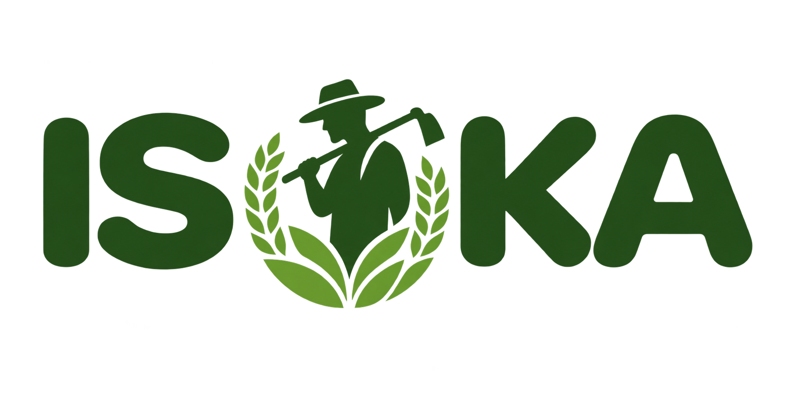

Build your farm record
Keep your crops, plots, livestock, health details, dates, and farm observations in one organized place.

AGRICULTURAL INTELLIGENCE SYSTEMRwanda / countrywide intelligence
See the signals behind every season, from district weather to national production, and turn them into action before losses grow.
Use trusted agricultural information and practical farm tools to make better decisions every season.
Keep your crops, plots, livestock, health details, dates, and farm observations in one organized place.
Use published agricultural data and your own farm records to see production patterns, risks, and areas needing attention.
Track planting, harvest, animal health, breeding, and losses so important farm actions are easier to manage.

Isuka connects the bigger agricultural picture with the details of your own farm, whether you grow crops, raise livestock, or do both.
Follow the agricultural story from land and rainfall through district-level decisions and practical action planning.
Review national agricultural production, district conditions, and real-time coverage across Rwanda.
Open the overview Land & CropsTrace cultivated land, crop distribution, and production signals across seasons.
Explore Climate & RiskCompare seasonal climate patterns and monitor risk exposure before it becomes a loss.
View risks Inputs & PracticesBrowse the input and practice mix that shapes productivity, resilience, and field decisions.
See practices District ExplorerZoom into district-level patterns, crop performance, and location-specific agricultural conditions.
Open explorer ForecastingAssess likely trends, seasonal outlooks, and planning signals before the next production cycle.
View forecast Loss PlannerModel likely loss pathways and prioritize actions that reduce preventable agricultural damage.
Plan responseLoading current Overview data...
Source: NISR Seasonal Agricultural Survey, processed through Isuka's Overview data service.
See the full live country dashboardof Rwanda's workforce is engaged in agriculture. Isuka exists to help their work translate into stronger, more secure livelihoods.
Reliable information belongs in the hands of the people making decisions in the field.

Explore Rwanda's agricultural data, then create a farm profile to keep your crops and livestock organized.
Create your farm profileISUKA AI ASSISTANT
Create your ISUKA account or sign in to receive guidance based on your farm information, weather conditions, and relevant agricultural knowledge.